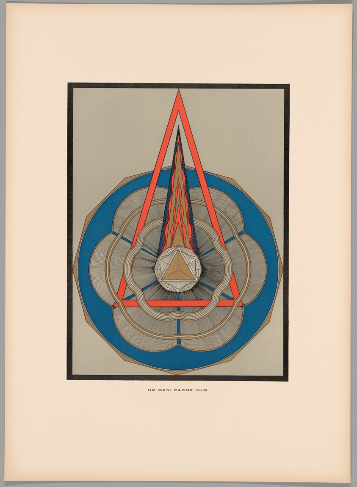
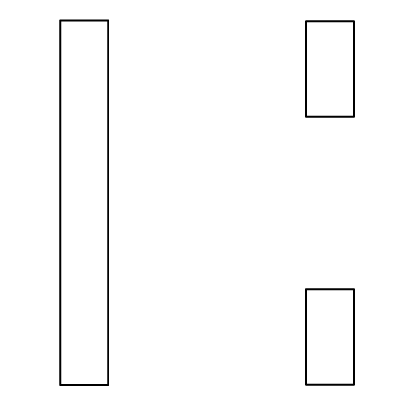

MYSTIC ART
Mystic art embodies everything that it means to create with balance. The female artists highlighted within this archive all used their sense of spiritually to fuel their art. By creating from a mind, body, and soul connection, an artist can achieve this difficult yet universally understood concept of balance.


TRA CITSYM
HILMA AF KLINT
1862 – 1944
Swedish artists and mystic.
OLGA FROBE-KAPTEYN
1881 – 1962
Dutch spiritualist, theosophist, and scholar.
EMMA KUNZ
1892 – 1963
Swiss healer, researcher, and artist.
always searching for
the center
Can balance be defined, or is it just an innate feeling?
Balance is complex
The space between two opposites.